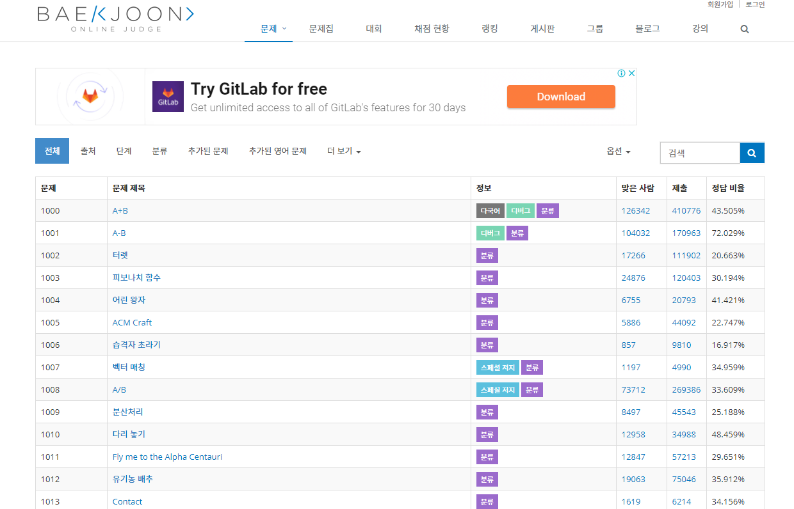
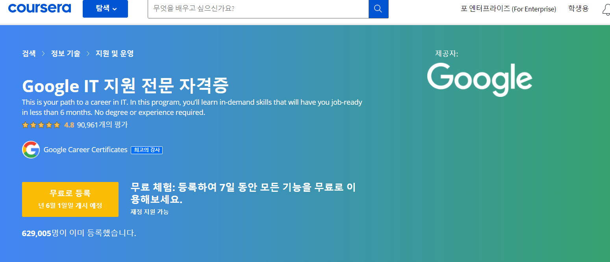

- 2021.06.21~27 : stage 9 clear!!
- 2021.06.28~07.04 : stage 10 clear!!
- 2021.07.05~11 : stage 11 clear!!
- 2021.07.12~18 : stage 12 clear!!
- 2021.07.19~25 : stage 13 clear!!
- 2021.07.26~08.01 : stage 14 clear!!
- 2021.08.02~08 : stage 15 clear!!
- 2021.08.09~15 : stage 16 clear!!
- 2021.08.16~22 : stage 17 clear!!
- 2021.08.23~29 : stage 18 clear!!
- 2021.08.30~09.05 : stage 19 clear!!
My Future Plan
- Preparing for next week's final exam
- Create my own web page
- Taking hacking classes during vacation
- Solve one question through baekjoonsite every day.
- Take classes for 2 hours a day and solve assignments using the coursera site.
Baekjoon

I will solve Baekjun's problem one by one every day.
Start the step 8 through language Java, c/c++.
After solving the problem and succeeding,
do git my programming on the github site.
Coursera
- 😀 6월 17일 ~ 7월 4일 (17일간)
- 😄 7월 5일 ~ 7월 25일 (3주간)
- 😆 7월 26일 ~ 8월 15일 (3주간)
- 😉 8월 16일 ~ 9월 5일 (3주간)
- 😊 9월 6일 ~ 10월 3일 (4주간)
Book
- Java의 정석

This book is a Java introductory book that will be used to find concepts
that you don't know while solving site problems such as Baekjun and Codeforce.
There is a site that trained this java's contents on video.
The site's name is Namgoongseong's code beginner study, which helps us understand the video of Java Standard 3.
I first read this book when I was a freshman in college.
It was difficult because there were a lot of things I didn't know,
but it was beneficial because I learned so much.
남궁성의 코드초보 스터디 카페
남궁성의 코드초보 스터디 카페